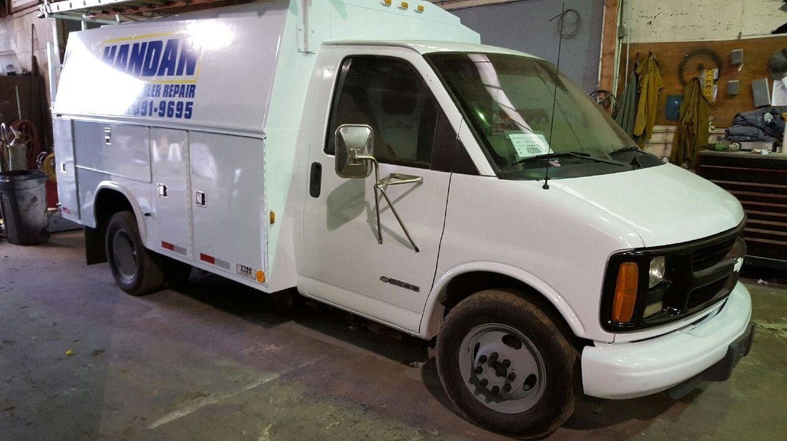
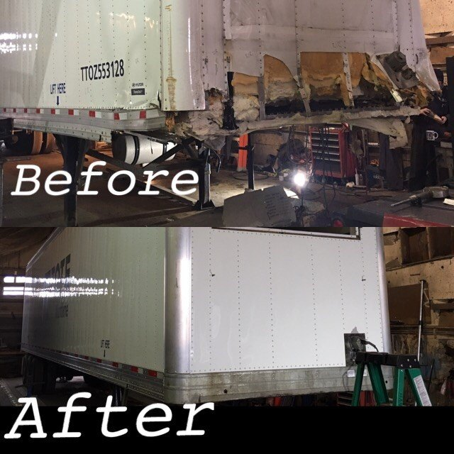
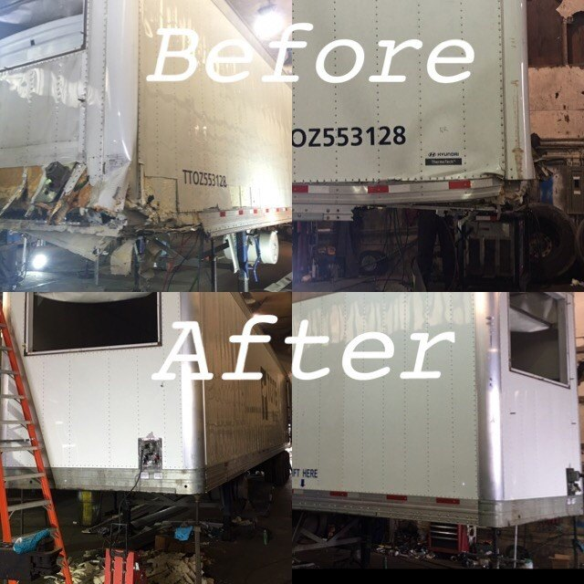
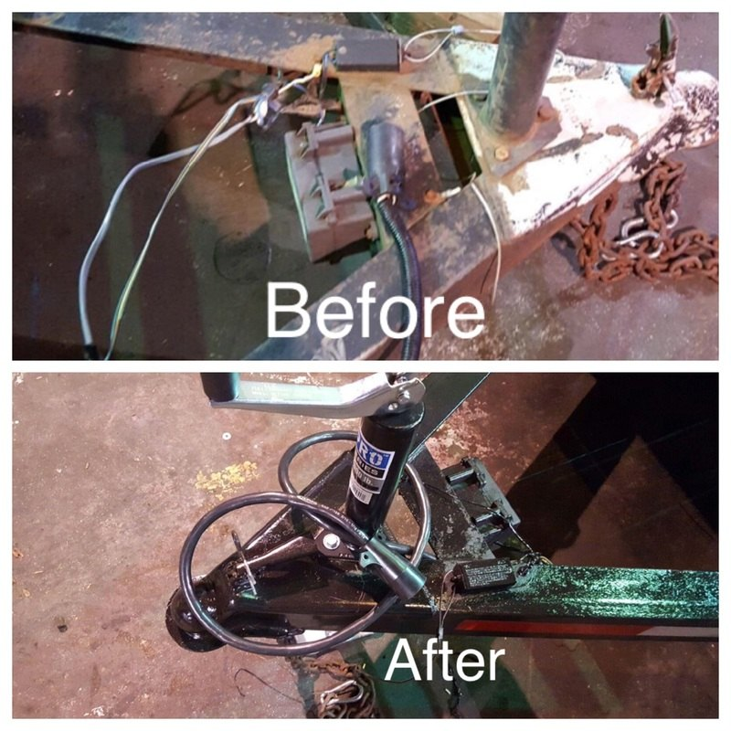
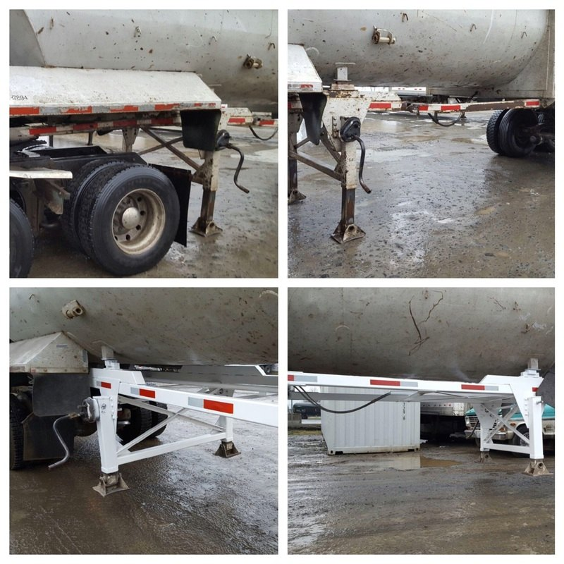
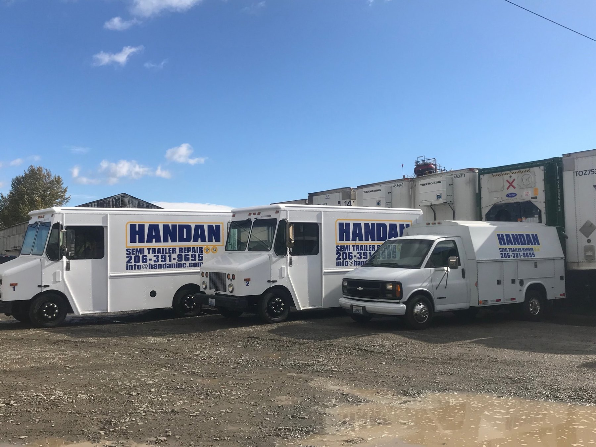

Trailer Repair & Maintenance
Support for brakes, lights, wiring, floors, roofs, doors, skin panels, and other common trailer repairs.
Discuss this service →FAMILY-OWNED · SERVING TACOMA SINCE 1998
Keep your operation moving with dependable repairs, maintenance, and modifications for commercial trailers and shipping containers.

ABOUT HANDAN INC.
When a trailer or container needs attention, downtime costs you time and money. Handan Inc. brings practical experience and responsive service to the work that keeps freight moving.
We’re a family-owned business based in Tacoma, Washington, serving the general public, freight companies, freight forwarders, shipping companies, fleet operators, and U.S. government agencies. From repairs in our facility to mobile service, our team works to deliver dependable support and competitive pricing.
Get to know HandanHOW WE CAN HELP
From everyday wear to structural repairs and custom modifications, Handan helps commercial operators take care of the equipment they rely on.
Support for brakes, lights, wiring, floors, roofs, doors, skin panels, and other common trailer repairs.
Discuss this service →Repair work for container walls, doors, floors, deck sections, fork pockets, and damaged structural areas.
Discuss this service →Fully equipped service trucks bring repair support to your site, helping reduce unnecessary equipment movement.
Discuss this service →Practical modifications such as roll-up doors, curtains, and other changes to fit your equipment needs.
Discuss this service →Repairs for chassis components, landing legs, fifth-wheel plates, cross members, and related hardware.
Discuss this service →Inspection and maintenance support, including FHWA and CSC inspection-related work. Contact us about your requirements.
Discuss this service →REAL WORK. REAL EQUIPMENT.
Explore examples from the shop floor, mobile fleet, and repair projects. Every job starts with understanding what your equipment needs.





CUSTOMER FEEDBACK
We value the customers who trust Handan with their equipment and their time.
★★★★★“Great family owned business!!! They took care of my ABS and taillight issue on my trailer and got me right in! I definitely would recommend them and will use them again!”
★★★★★“Great communication, fast, and quality work.”
JOIN THE TEAM
Handan is always interested in connecting with skilled people who take pride in their work. We look for welders, fabricators, CDL drivers (TWIC card preferred), and trailer mechanics.
Send your resumeSend your resume and a brief introduction to our team.
info@handaninc.comLET'S GET YOU MOVING
Day or night, weekday or weekend, contact Handan to discuss your trailer or container repair needs.
Call 206-391-9695For a second line, call 206-391-3852.
1801 Alexander Ave E
Tacoma, WA 98421, United States
Tell us about the equipment and repair you need.
Call to discuss service availability and next steps.